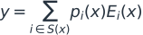
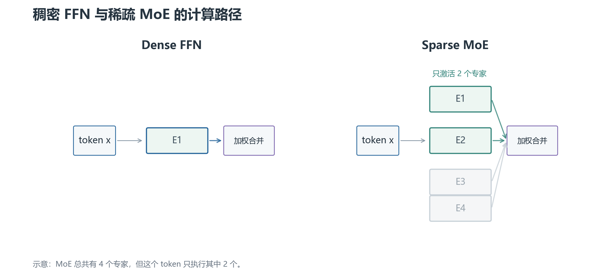
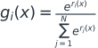
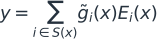
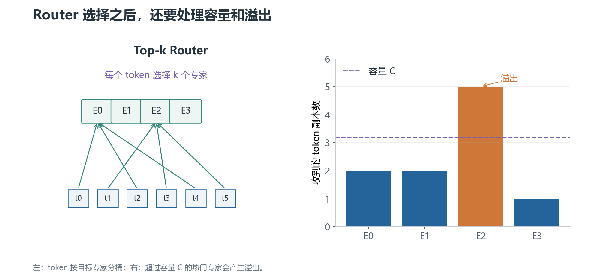
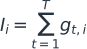
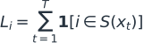
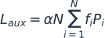
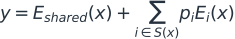
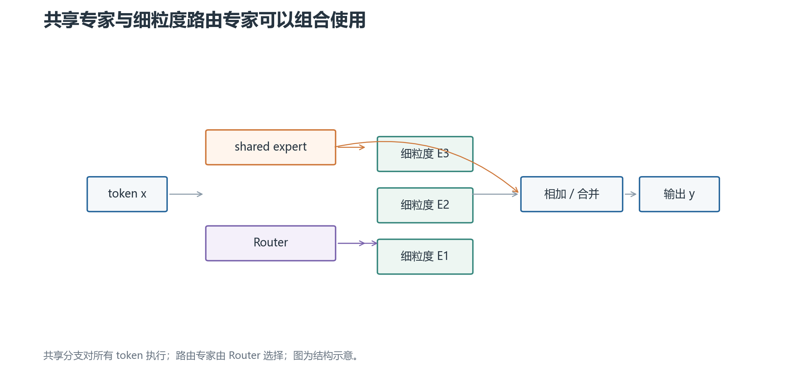

MoE 架构
Router、负载均衡与专家组织
理解 token 为什么只经过少数专家，以及这件事如何影响训练稳定性、通信和推理成本。
默认讨论稀疏 MoE FFN；具体模型的路由、容量和专家配置仍需核对实现。
01 · 为什么需要 MoE：增加总容量，只让少数专家工作
标准 Transformer 的 FFN 对每个 token 都使用同一组参数。一个常见的 FFN 是：
x 是 token 的隐藏状态，W₁ 把维度扩大，激活函数 σ 引入非线性，W₂ 再投影回模型维度。
1. 稠密 FFN 的问题
如果把中间维度做得很大，FFN 有更强的表示容量，但每个 token 都要经过完整的 W₁ 和 W₂。总参数量和每 token 的计算量都会增加。
MoE 把一组 FFN 换成多个专家：
Router 根据 token 的隐藏状态选择少数专家，只计算被选中的结果。总参数量增加，但单个 token 的激活计算主要由 k 个专家决定。
这不是“把一个 FFN 分成几块后全部执行”。如果所有专家都执行，就失去了稀疏激活带来的计算收益。
2. 一个 token 的 MoE 输出
Router 先产生每个专家的分数 r(x)，选择 Top-k 专家集合 S(x)。经过归一化后，输出是：

pᵢ 是被选专家的路由权重。它决定不同专家结果在最终输出中的混合比例。
如果 k=1，每个 token 只走一个专家；如果 k=2，通常计算两个专家再加权。k 越大，表达和鲁棒性可能更强，但专家计算、通信和聚合成本也会上升。

图中“未激活”表示该 token 不执行对应专家，并不表示这些专家没有参数或永远不训练。
3. MoE 解决的是什么，没解决什么
它主要改变参数容量与每 token 激活计算之间的关系。它不自动解决训练数据质量、长上下文、通信瓶颈或路由不稳定。
专家也不一定天然对应“数学专家”“代码专家”等清晰语义。训练后可以通过统计专家接收的 token 分布来分析，但不能把这种解释当作结构保证。
下一章：Router 与 Top-k 路由。
02 · Router 与 Top-k 路由：token 先去哪几个专家
Router 是一个小的可学习模块，通常用线性层把 token hidden state 映射成专家 logits：
第 i 个分量表示当前 token 被专家 i 处理的倾向。它还不是概率，因为 logits 可以为负，且没有归一化。
1. 为什么要 Softmax 和 Top-k
先把 logits 转成路由概率：

如果让所有专家都执行，MoE 退化成稠密组合，成本很高。因此只保留概率最大的 k 个专家：
实际输出通常使用被选项的权重，并按实现决定是否对 Top-k 权重重新归一化：

这里必须查看具体实现；不能把“先全量 Softmax”与“只对 Top-k logits Softmax”混写成同一算法。
2. Router 为什么需要噪声或抖动
早期训练时，某些专家可能因为随机初始化或微小优势吸引大量 token。Top-k 是离散选择，轻微分数差也可能造成选择数量突然变化。
一些实现会给 router logits 加噪声，或使用 jitter，让早期选择更有探索性。噪声的形式、训练阶段和推理阶段是否启用取决于模型实现。
噪声不是负载均衡的充分条件。没有容量控制和辅助目标，路由仍可能塌缩到少数专家。
3. Capacity：一个专家一次最多收多少 token
一个 batch 有 T 个 token，专家数为 N，Top-k 为 k。平均每个专家接收的 token 副本数约为：
考虑不均衡和实现余量后，常设置容量：
当某个专家被分配超过 C 个 token 时，会发生溢出。实现可能丢弃该路由、把 token 送到 residual/skip 路径，或采用 dropless 的更复杂调度。
容量因子大，溢出少但显存和通信 buffer 更大；容量因子小，资源省但可能丢失 token 的专家计算。
4. Dispatch 与 Combine
Router 只产生选择结果，真正的工程步骤还包括：
- 把 token 按目标专家分桶（dispatch）。
- 各专家对自己收到的 token 批次执行 FFN。
- 按原 token 位置和路由权重把结果合回去（combine）。

分布式训练中，token 可能要通过 All-to-All 发到不同设备。于是路由不只是数学选择，也决定通信量和设备间负载。
5. Top-1 与 Top-2
Top-1 每个 token 只激活一个专家，计算和通信更省，但路由错误没有第二条路径补偿。
Top-2 激活两个专家，通常将两份结果按权重合并，表达更灵活，但专家计算与容量需求也增加。Top-k 并非越大越好，应结合质量、吞吐、通信和溢出率评估。
下一章：负载均衡损失。
03 · 负载均衡损失：为什么不能只看主任务 loss
如果 Router 总把 token 送给同一小部分专家，未被选中的专家几乎没有梯度，热门专家还会超过容量。于是 MoE 通常加入辅助的负载均衡目标。
1. 先区分 importance 与 load
对一个 batch，Router 的 softmax 概率可以定义每个专家的 importance：

它关注“概率质量”有多少分给专家 i。
Load 则关注实际 Top-k 选择次数：

importance 可以连续反向传播；load 包含离散选择，直接优化更困难。两者高并不总是完全一致：某专家可能拿到很多中等概率但没进 Top-k 的质量。
2. 一个常见的均衡目标
把 batch 平均后的 importance 和 load 分别记为 f_i、P_i。一种常见辅助损失形式是：

α 是辅助损失系数。若所有专家都平均接收 token，f_i≈P_i≈1/N，乘积和约为 1/N，前面的 N 让量级约为 1。
如果少数专家同时拥有很高的概率和很高的选择比例，乘积和会变大，损失推动 Router 分散选择。
这不是唯一的负载均衡公式。不同论文和实现可能使用 importance/load 的变体、均方偏差、熵正则或 z-loss。回答时应先说清楚采用哪一个定义。
3. 为什么辅助损失不能无限加大
主任务损失希望 Router 选择最有助于预测的专家；均衡损失希望各专家接收得更平均。两者目标可能冲突。
α 太小，Router 可能塌缩；α 太大，Router 为追求平均而把 token 送给不合适的专家，主任务质量下降。它需要与学习率、batch、专家数和容量一起调节。
只看 L_aux 下降也不够。还要记录每专家 token 数、最大/平均负载比、溢出率、被丢 token 比例、路由熵和主任务 loss。
4. 为什么“看起来平均”仍可能有问题
按整个训练 batch 求平均，可能掩盖某些序列、语言或位置上的局部拥塞。一个专家整体负载正常，不代表每个 device 的局部 buffer 都没有溢出。
还可能出现 importance 平均，但实际 Top-k load 偏斜；或者 token 分布平均，却因为专家位于不同设备而造成通信热点。
所以负载均衡至少要在 batch、device、序列长度和训练阶段几个层面观察。
下一章：细粒度专家与共享专家。
04 · 细粒度专家与共享专家
传统 MoE 常把一个较大的 FFN 当作一个专家。现代设计还会改变专家粒度，或者增加一个所有 token 都经过的共享专家。
1. 细粒度专家是什么
把原本较大的 FFN 拆成更多、更小的专家，并相应调整每个 token 激活的专家数。例如把每个专家的中间维度缩小，再增加专家总数，让 Top-k 选择组合出更多子空间。
“专家数更多”不等于“激活计算更多”。关键要同时看单专家中间维度、N、k 和总激活参数量。
细粒度的潜在好处是路由组合更灵活、容量分配更细；代价是 Router 选择、dispatch、通信和元数据管理更复杂。
2. 共享专家是什么
共享专家（shared expert）是每个 token 都经过的 FFN 分支；路由专家（routed experts）则由 Router 选择。一个常见组合是：

共享分支提供所有 token 都需要的通用变换，路由分支提供条件化的专门容量。
这不是说共享专家一定学“通识”、路由专家一定学“领域知识”。它是结构上的共享与选择，不是语义标签。
3. 为什么共享专家可能帮助路由
如果所有 token 都必须从路由专家中选择通用基础功能，Router 可能在热门专家之间争抢容量。共享专家承担一部分共同变换后，路由专家可以把容量留给更有区分度的模式。
但共享专家也增加了每 token 的稠密计算和参数。它不能免费解决专家拥塞，也不能代替负载均衡损失。

4. 怎样公平比较两个 MoE 结构
至少固定或报告：总参数量、每 token 激活参数量、专家中间维度、N、k、共享分支、容量因子、溢出策略和通信布局。
只说“专家更多”或“激活参数更少”无法比较实际成本。共享专家会增加固定 FLOPs；细粒度专家可能增加 dispatch 开销；GQA、量化和并行策略也会影响端到端结果。
下一章：训练与推理实现。
05 · 训练与推理：MoE 真正难在哪里
MoE 的数学公式不算长，难点集中在 token 重排、容量、通信和可复现评估。
1. 专家并行和 All-to-All
如果不同专家放在不同设备上，一个 batch 的 token 需要发送到拥有目标专家的设备。这个过程通常使用 All-to-All 或等价通信。
Router 负载不均会变成通信不均：热门专家所在设备收到更多 token，其他设备空闲，整体 step time 被最慢设备决定。
因此“每个 token 只算 k 个专家”不等于总系统成本只剩 k/N。通信、padding 到容量、专家 FFN 和 combine 都要计算。
2. token dropping 与 dropless
容量不足时，传统实现可能丢弃超出容量的专家副本，让 token 走 residual 或跳过该专家。丢弃比例应单独监控，因为主任务 loss 下降不代表所有 token 都得到完整专家计算。
Dropless MoE 尝试保留所有 token，但需要动态 buffer、更多通信或更复杂 kernel。它消除了显式丢 token，不代表计算和显存没有上限。
3. 推理阶段为什么负载问题仍然存在
推理 batch 变小时，专家的固定调度和通信开销可能占比更高。动态请求长度还会让不同 step 的 token 分布变化。
Serving 系统可能使用专家并行、张量并行、批处理和量化。具体部署属于 infra，这里重点只记录架构层的约束：路由选择、KV cache 与专家执行必须保持模型配置一致。
4. 面试排错顺序
先确认 N、k、h 与容量公式；再打印每专家的 importance/load、溢出率和每 device token 数；接着检查 dispatch index 与 combine 权重；最后看通信耗时和专家 FFN 的实际 batch 形状。
不要只用一个总 loss 判断 MoE 是否健康。一个能收敛但 30% token 被丢弃、某些专家从不激活的模型，训练状态并不健康。
5. 高频追问
MoE 是不是减少了模型总参数？ 通常不是。它增加总专家参数，但每个 token 只激活一小部分。
负载均衡损失是不是让每个专家完全一样忙？ 它提供统计上的倾向，不保证每个 batch、每台设备、每个位置都严格相等。
shared expert 与 routed expert 的区别？ shared expert 对所有 token 执行，routed expert 由 Router 选择；共享专家不等于某个固定语义专家。
Top-k 越大越好吗？ 不一定。质量、激活计算、通信、容量和路由稳定性需要一起评估。
为什么不能只把 dense FFN 复制成很多份？ 如果没有稀疏 Router，所有副本都执行，既没有条件化选择，也没有稀疏计算收益。